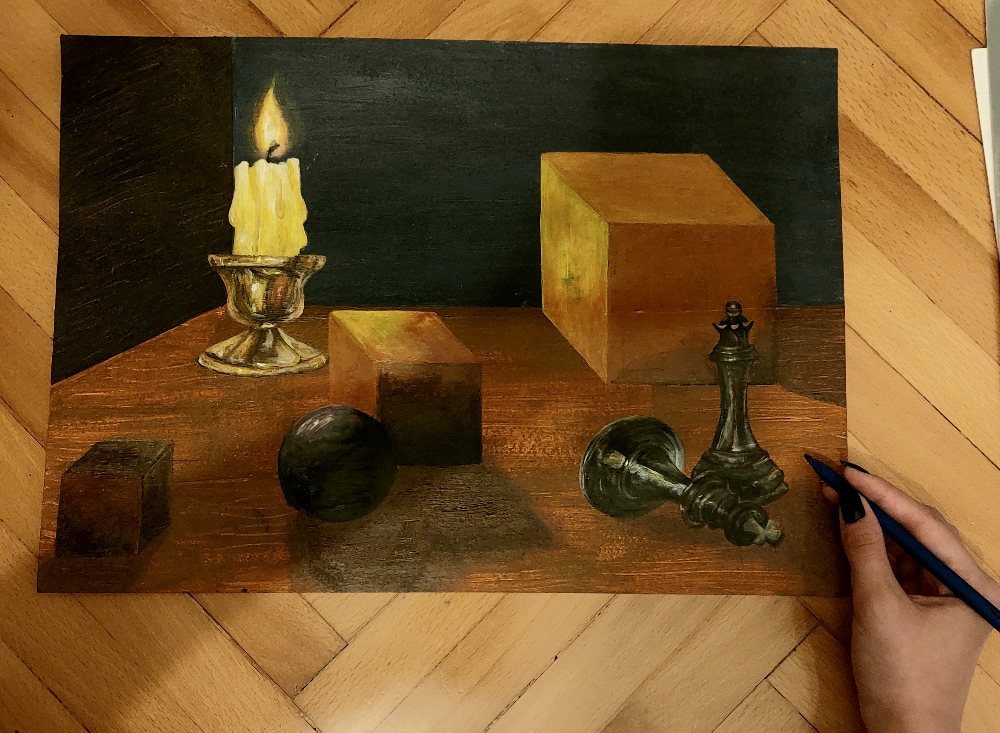
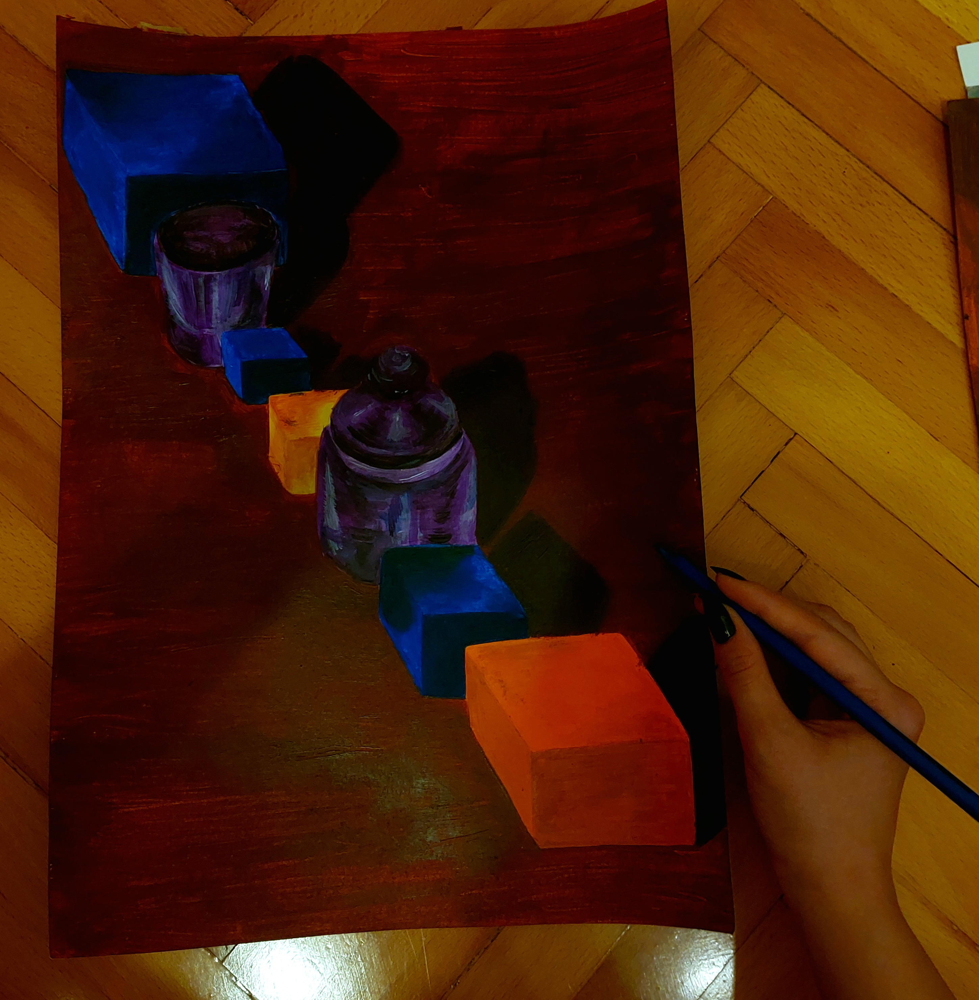
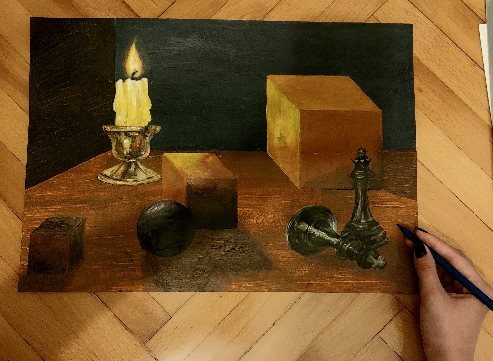
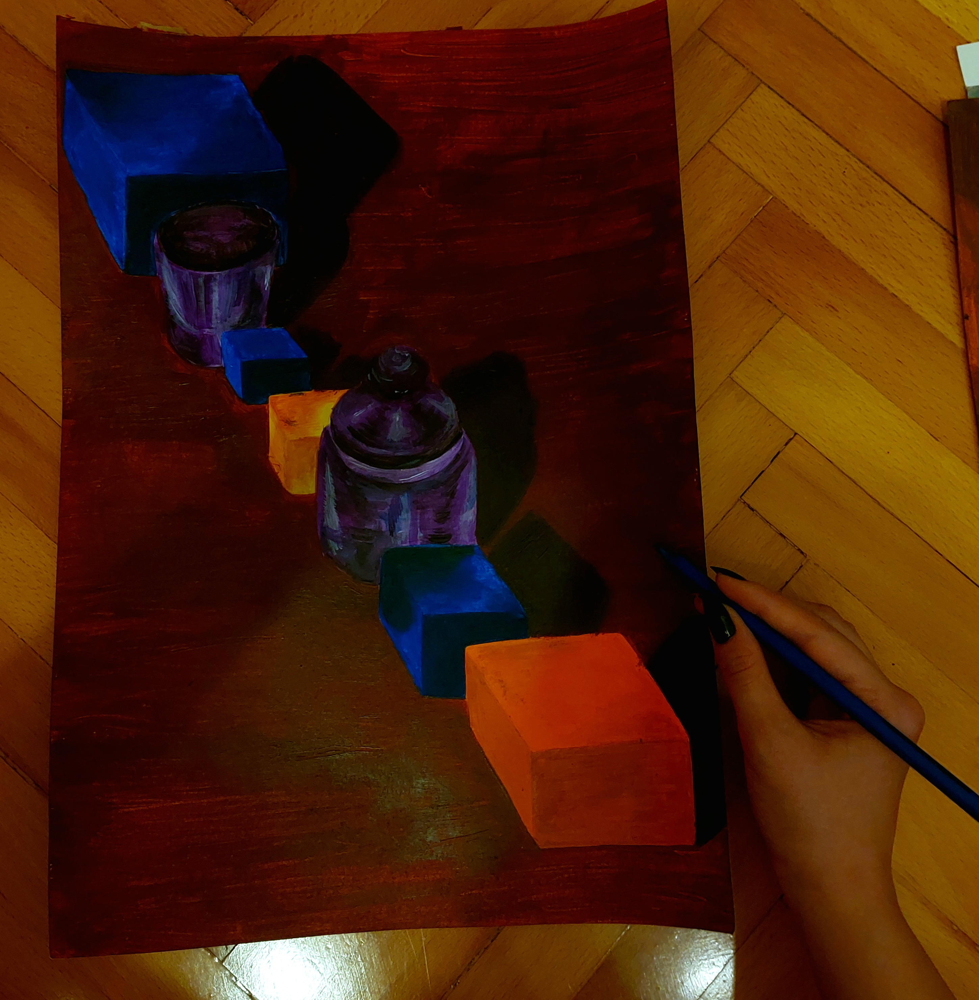

Rođena sam 10.7.2002., a odrasla u Zaprešiću. Pohađala sam Osnovnu školu Ljudevita Gaja, a nakon toga XV. Gimnaziju u Zagrebu. Trenutno sam na stufiju grafičkog dizajna. Neko vrijeme sam razmišljala o paralelnom studiju za sljedeću godinu, no ipak sam shvatila da ne bih to mogla vremenski pa se sljedeće godine nadam naći posao u nekom salonu za tetoviranje.
Oduvijek sam bila relativno kreativno dijete. Zanima me crtanje slikanje, kiparstvo, glazba i ples. Nažalost sam na neko vrijeme zapustila većinu tih interesa, ali u zadnje dvije godine ponovno sam se jako povezala s tim dijelom sebe. Počela sam ponovno aktivno slikati i crtati, učiti anatomiju u svrhu točnijih proporcija kod crtanja, svirati klavir i ukulele i u slobodno vrijeme plesati. Jako mi je drago što napokon imam vremena i volje za posvetiti se svemu tome jer su to neke od stvari u kojima iskreno uživam.
Osim što sam se posvetila crtanju, jako mi je drago što sam zbog Grafičkog fakulteta počela više cijeniti i druge tehnike osim olovke. Koristila sam isključivo olovku sve do ove godine, kada sam shvatila koliki potencijal imaju i druge tehnike kao akrilne boje, uljne boje, markeri i tuš. Iako još nisam ni blizu onoliko dobra u tim tehnikama koliko bih htjela biti, jako mi se sviđa što već vidim određeni napredak. I to sve jer sam te tehnike morala koristit za kolegij Likovne prakse 2. Za nju sam trebala raditi akrilnim bojama, kolažem i markerima. Jedina tehnika koju bih iskreno mogla reći da mrzim je kolaž. Koliko god truda uložim u kolaž, nikad nisam zadovoljna s rezultatom, a proces je nespretan i zna biti jako neuredan. Zahtjeva previše strpljenja i preciznosti (kod rezanja), a na to nisam naviknuta. U zadnje vrijeme najviše pažnje sam posvetila akrilu jer mislim da su akrilne boje i olovka one tehnike koje su najbolje za mene. Radovi za Likovnu praksu 2 kojima sam posvetila najviše vremena i truda su radovi s markerom i radovi kojima sam prikazala tonski sustav, a to su:

 



Prije sam aktivno trenirala ples, ali sada je to postao samo hobi kojem se vratim kada imam ekstra slobodnog vremena. Više se posvećujem gimnastici i kalistenici, nego zapravo plesu. Jako mi je fascinantno koliko se toga može postići sa samo par sati vježbe tjedno. Želim vidjeti koliko daleko mogu doći sama, bez trenera ni nikakve profesionalne pomoći. Nedavno sam s prijateljicom krenula na treninge akrobatike na trampolinu u Amazinga trampolin parku. Još smo tek na početku, ali već smo krenule vježbati razne okrete u zraku i trikove. To je jedna od stvari za koju sam jako uzbuđena, i obožavam što se već vidi napredak. Taj program se zove škola skakanja i preporučam ju svakome tko želi testirati svoje granice što se tiče akrobatike.
Cijeli život imam jack of all trades stav, mislim da je puno korisnije razvijati što više interesa, nego se u potpunosti posvetiti jednoj stvari. Vjerujem da postoji puno ljudi kojima takav život paše, ali znam da meni ne bi. Previše stvari me zanima i nemam ni blizu dovoljno vremena za sve njih. Mislim da su raznolika i zanimljiva iskustva ključni dio života te ih želim što više. Čak i ako otkrijem da nešto u konačnici nije za mene, svejedno će mi biti drago što sam to probala i stekla jedno novo iskustvo. Ipak, s obzirom da imam takav stav, dolazi do tog problema da nemam ni blizu dovoljno vremena za napraviti i probati sve ono što želim. Neke od stvari kojima mislim da se ne posvećujem dovoljno su fizika, biologija i filozofija. Nekako sam ih zanemarila otkad sam se ponovno počela posvećivati kreativnom dijelu, ali stvarno se nadam da ću naći vremena i za njih.
Dugo vremena sam mislila da je fizika ono čime se želim baviti u životu pa mi je zato sada jako žao što joj više ne pridajem toliko pažnje. Isto vrijedi i za biologiju. Znam da PMF ne bi bio za mene jer nemam dovoljno razvijene radne navike za toliko učenja, ali definitivno želim nastaviti učiti o fizici i biologiji. U osmom sam razredu išla na državno natjecanje iz eksperimentalne fizike te mi je žao što otad nisam išla na nikakva STEM natjecanja niti išta slično.
Što se tiče filozofije, ona se uklapa u jack of all trades životni stav te mi je jako zanimljiva, ali samo kao hobi. Znam da ne bih htjela cijeli život posvetiti njoj. Jedan od videa koji sam nedavno pogledala i koji mi je bio jako zabavan je YouTube video o Schopenhauerovoj filozofiji:
SchopenhauerIpak, interes kojem sam trenutno najviše posvećena je tetoviranje i u procesu sam rađenja portfolia da se mogu zaposliti. Dosada sam tetovirala samo prijatelje i ljude koje znam, ali jako želim napraviti stranicu sa svojim radovima. Kupila sam mašinu za tetoviranje prije skoro dvije godine i jako volim što me još uvijek zanima jer sam sklona tome da često i naglo izgubim interes za nešto što me dotada zanimalo.